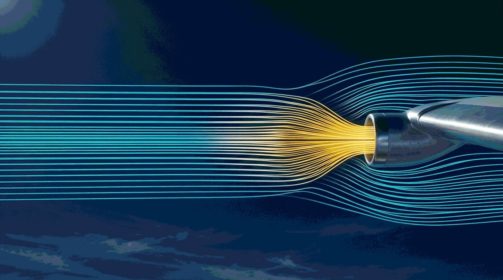
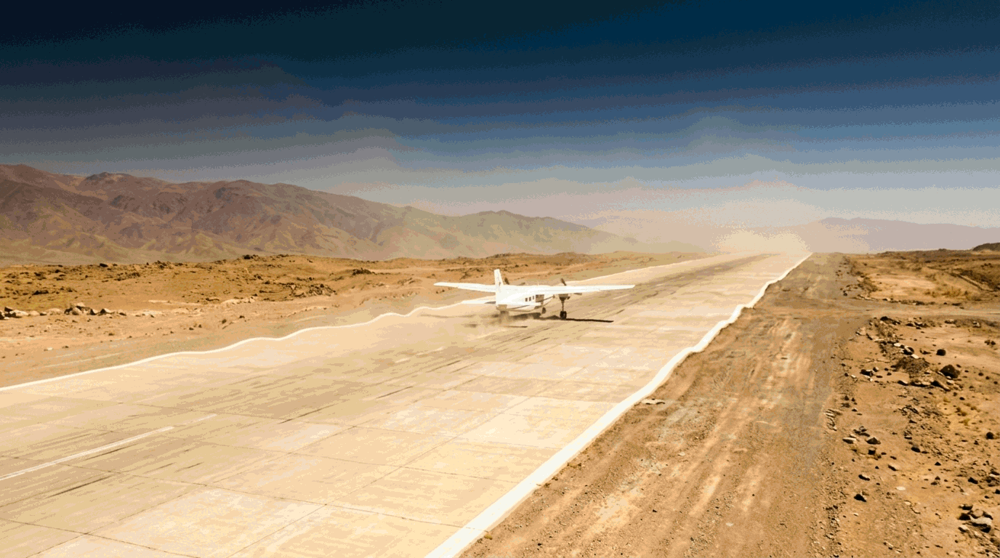

Four numbers claim to tell you how fast you are going and how high you are. Only two of them are true, and neither is the one on the dial.
Winter night, non-precision approach into a valley aerodrome. Outside air temperature −25 °C. The step-down fix calls for 3,000 feet and your altimeter reads exactly that, with the correct QNH set. You are stable, configured, and legal.
You are also about 400 feet lower than the altimeter says.
The instrument is not broken. It is calibrated for a standard day, and this is not one. Cold air is dense air, pressure falls away faster with height, and the altimeter counts pressure — so it hands you back a number that is too big. On a cold day you are always lower than you think. This chapter is where you learn to know by how much.
The airspeed indicator does not measure speed. It measures the pressure of air being rammed into a tube on the nose, and then assumes a great deal about the air in order to turn that pressure into a number of knots.
Every one of those assumptions has to be corrected, in a fixed order. Learn the order once and the whole chapter follows from it.
IAS — Indicated Airspeed. The number on the glass. Honest about nothing except what the instrument itself sensed.
CAS — Calibrated Airspeed. IAS after the aircraft's own errors are removed: instrument error (the mechanism is imperfect) and pressure or position error (the static port cannot find perfectly undisturbed air anywhere on an aeroplane). Both come off one correction card beside the instrument. Older documents call this RAS — Rectified Airspeed. Same thing.
EAS — Equivalent Airspeed. CAS after allowing for the fact that air is springy and gets compressed at the pitot at high speed. As a line pilot you will almost never use it. It is examinable, so you must know what it is.
TAS — True Airspeed. Your genuine speed through the air mass. This is what navigation runs on, and it is the only one of the four that is a real speed.
The order is the answer to half the questions in this topic. IAS → CAS → (EAS) → TAS, never any other sequence. A question that offers you "correct for density, then instrument error" is offering you a wrong order and seeing whether you notice.
And the number that decides whether EAS appears at all is 300 knots TAS — not 300 CAS, not 300 IAS. You have to calculate before you know which path you were on.
The airspeed indicator is calibrated for one specific air density: 1225 grams per cubic metre, which is the ISA value at mean sea level. At that density, and only at that density, CAS and TAS are the same number.
Climb, and the air thins. To ram the same pressure into the pitot tube — to keep the same CAS on the dial — you must move faster through that thinner air. The dial does not know this. Your navigation does.
CAS ÷ √σ would draw it too fast — 17 knots
too fast at the top of the climb.Add about 2% to CAS for every 1,000 feet of altitude. At 10,000 ft that is +20% — 200 CAS becomes about 240 TAS, and the exact answer is 232. At 20,000 ft, +40% predicts 280 against a true 271.
Know where it turns on you. Through the low and middle levels it reads a few knots high, which is the safe direction. Around FL300 it is very nearly exact — 320 against a true 319. Above that it goes the other way and runs low: at FL400 it predicts 360 against a true 386, and a rule of thumb that under-reads your true airspeed is no longer a conservative one.
Use it to catch a keying error in the levels you actually fly a light aircraft in. Never use it to file a flight plan, and do not carry it into the thirties.
You cannot measure density in flight. There is no density gauge. But you have a thermometer and you have an altimeter, and the gas laws tie pressure, temperature and density together — know any two and the third is fixed.
| Flight level | ISA temp (°C) | Pressure (hPa) | ISA density (g/m³) | Feet per hPa |
|---|---|---|---|---|
| FL000 | +15 | 1013.25 | 1225 | 27 |
| FL050 | +5 | 843 | 1056 | 32 |
| FL100 | −5 | 697 | 905 | 37 |
| FL150 | −15 | 572 | 771 | 43 |
| FL200 | −25 | 466 | 653 | 51 |
| FL250 | −35 | 376 | 549 | 61 |
At sea level it takes 27 feet of climb to lose one hectopascal. At FL250 it takes 61 feet. The higher you go, the more feet you must climb to shed the same pressure, because the air up there is thin.
That single fact drives density error, true altitude and density altitude. Everything else in this chapter is arithmetic hung off it.
Problem. You are at FL200 with a CAS of 100 knots. The static air temperature is −25 °C — exactly ISA. What is your TAS?
1. Read the density at FL200 from the ISA table: 653 g/m³.
2. Relative density is that, compared with
sea level:
653 ÷ 1225 = 0.5331
3. Take the square root:
√0.5331 =
0.7301
4. Divide CAS by it:
100 ÷ 0.7301
TAS = 137 knots
CAS: press 100, enter.OAT: set units to °C, press 25+/−, enter.PAlt: press 20000, enter.TAS reads 137 kt
Which do you use? The CX-3, every time. The arithmetic is here so you understand what the box did — and so you can spot an answer that is obviously wrong. You will never be asked to look up a density in an exam.
Sanity check. FL200 is 20,000 feet, so the 2%-per-1,000 rule predicts +40%: about 140 knots. The answer is 137. Close enough to trust, far enough from 100 to prove the correction matters.
Problem. Pressure altitude 18,000 feet, corrected outside air temperature −30 °C, CAS 170 knots. Find TAS.
1. 18,000 feet → add roughly 18 × 2% = 36%.
2. 170 × 1.36 = 231
3. The day is colder than ISA (ISA at 18,000 is about −21 °C, so this is ISA −9). Colder air is denser, so the true answer sits a little below the estimate.
expect about 220–230 kt
CAS: 170, enter.OAT: 30+/−, enter.PAlt: 18000, enter.TAS reads 220 kt
Notice what Method 1 bought you. It did not give the answer. It gave you a range, and the confidence to reject 22.0 or 2,200 the instant the screen showed it. That is its whole job.
Watch the temperature sign. −30 is entered as 30 then the +/− key — digits first, sign afterwards. Enter +30 by mistake and the CX-3 returns 247 knots with complete confidence.

Air is springy. At low speed it flows politely around the pitot tube and the instrument's assumptions hold. At high speed the air cannot get out of the way fast enough: it piles up and compresses at the tube's mouth, the pressure sensed is higher than the airflow really justifies, and the ASI over-reads.
The instrument is calibrated to allow for compressibility at ISA sea level. At any other density — which is to say, nearly always — that allowance is wrong.
Correcting CAS for compressibility gives Equivalent Airspeed (EAS). Below about 300 knots TAS the correction is small enough to ignore entirely.
The old disc needed two steps: read a TAS, then slide a separate compressibility index and read a corrected TAS. The CX-3 needs one.
Its Airspeed function does not use the simple density relationship. It solves the full compressible equation internally, so the TAS it hands you is already correct at any speed. There is no compressibility field, no second step, and no menu to hunt for.
You will never apply a compressibility correction on this machine. If a question hands you one, it is testing whether you know that.
The CX-3 User's Guide never uses the words "compressibility" or "EAS" — a search of all 24 pages returns nothing. That alone would only prove the manual is silent.
What settles it is the source key to this chapter. Three of its ten TAS problems come out above 300 knots, where the source applies a manual compressibility correction on the disc. Running those same three through the compressible equation reproduces the book's corrected answers to within about 2 knots — while the simple density calculation misses them by 23, 24 and 27 knots.
| Question | Simple density calc | Compressible calc | Book's corrected answer |
|---|---|---|---|
| CAS 300 · 30,000 ft · −40 °C | 495 | 470 | 472 |
| CAS 295 · 31,000 ft · −53 °C | 484 | 459 | 460 |
| CAS 260 · 35,000 ft · −45 °C | 477 | 452 | 450 |
That is evidence about the book, though — it shows the compressible answers are the right ones, not that this particular machine produces them. So here is the evidence about the machine itself.
The Guide prints its own worked examples to two decimal places. Take the one it calls Required CAS: TAS 150 kt, OAT 41 °F, pressure altitude 6,500 ft. The Guide states the machine answers 135.58 KTS. Work that backwards by both methods:
| Method | Gives | Against the Guide's 135.58 |
|---|---|---|
Simple density — CAS = TAS × √σ |
135.39 kt | out by 0.19 |
| Compressible — TAS → Mach → qc → CAS | 135.58 kt | exact |
The two methods are 0.19 knots apart at that speed and the Guide prints two decimals, so the answer can tell them apart — and it lands on the compressible one, to the last digit. The Guide's Actual TAS example does the same thing in the opposite direction: CAS 150 MPH, TAT +10 °C, 6,500 ft, answer 166.64 MPH. Compressible gives 166.64; simple density gives 166.86.
And one more tell. That second example also reports OAT 7 °C from a TAT of +10. Recovering the ram rise from those two numbers gives the full compressible relation at a recovery factor of 1.0 — the same physics, inside the same function. A machine that ignored compressibility in the airspeed chain would not be using it for the temperature.
Why this passage exists, and what it still does not prove. Reviewers have challenged this claim more than once, and the honest answer is that the first version of this chapter asserted it without showing anything about the machine at all. The numbers above are from the CX-3 User's Guide V1.3 and you can rerun them yourself. What remains unproved is the behaviour at high Mach: every airspeed example the Guide prints sits near Mach 0.23. So this is the compressible relation confirmed at low speed and assumed to continue. One CAS-to-TAS run at Mach 0.8 on a physical unit would close that gap for good.
The two-step disc procedure existed to patch the disc's own geometry. Teach the theory in full — and teach that the procedure has gone.
Mach number is your speed compared with the speed of sound in the air you are flying through right now. And the speed of sound depends on exactly one thing: temperature.
Not pressure. Not altitude. Not density. Temperature alone. Which is why this calculation has one input where the CAS route had three.
The speed of sound at ISA sea level is 661.5 knots, and ISA sea level is 288 K. Divide one by the square root of the other: 661.5 ÷ √288 = 38.98. The constant is conventionally written as 38.95, which is the same relationship carried to the precision the exam works to.
So the formula is really just: the speed of sound today, times your fraction of it.
Problem. Corrected outside air temperature −47 °C, Mach number 0.82. What is the TAS?
1. Convert to kelvin:
273 − 47 = 226 K
2. Square root:
√226 = 15.03
3. Multiply through:
0.82 × 38.95 × 15.03
TAS = 480 knots
MACH: press .82, enter.OAT: press 47+/−, enter.TAS. TAT also appears — useful as a
cross-check against the probe.TAS reads 480 kt
This is the one place the formula genuinely competes. Three keystrokes on a calculator against navigating two menu levels. Under exam time pressure, either is fine — but you should be able to do this one in your head to within ten knots.
Sanity check. At around −50 °C the speed of sound is close to 585 knots. Eight-tenths of 585 is about 470. The answer is 480. Right neighbourhood.
Two traps, both about temperature.
First: the formula wants kelvin, and kelvin is never negative. If you find yourself taking the square root of a negative number you have skipped the +273.
Second: it wants SAT, the real air temperature — not TAT, which is what the probe reads. At Mach 0.82 the ram rise is roughly 30 °C. Feed TAT into this formula and you will be about 30 knots fast, with a completely plausible-looking answer.
Everything else in this chapter affects your flight plan. This one affects whether you clear the ridge.
Your altimeter is a barometer with a scale printed in feet. It converts pressure to height using the ISA relationship — the standard day. When the real atmosphere is colder than standard, the air is denser, pressure falls away faster with height, and you reach the "3,000-foot pressure" sooner than you should.
So the needle says 3,000 and you are lower. Cold means low.
The CX-3's Altitude function outputs pressure altitude and density altitude. True altitude is not among them, and the words do not appear anywhere in its User's Guide.
This one is yours to calculate. It is also the one most worth being able to do without any instrument at all.
ISA temperature = 15 − 2 × (altitude in thousands of feet)
At 20,000 feet: 15 − 40 = −25 °C. If the actual SAT is −35, the deviation is −35 − (−25) = ISA −10.
The strict lapse rate is 1.98 °C per 1,000 ft. Using 2 costs you a fraction of a degree and saves you an error under pressure.
Problem. Indicated altitude 20,000 feet. SAT −35 °C. What is your true altitude?
1. ISA temp at 20,000 ft:
15 − (2 × 20) = −25 °C
2. Deviation:
−35 − (−25) = ISA −10
3. Apply 4 ft per 1,000 ft per degree:
−10 × 4 × 20 = −800 ft
4. 20,000 − 800
True altitude = 19 200 ft
There is no true-altitude function. The machine can still help with two of the four steps:
Alt 20 000 to read the ISA OAT instead of
working it out — that is step 1 done.the subtraction is yours
Why the sign is the whole question. Cold is minus. Warm is plus. Get that backwards and you will report 19,200 as 20,800 — and on an approach you will believe you have 1,600 feet of margin you do not have.
Sanity check, and make it a reflex. The day is colder than standard, so true altitude must be the smaller number. 19,200 < 20,000. If your answer came out above the indicated altitude on a cold day, you added when you should have subtracted — go back.
The scenario at the top of this chapter: 3,000 feet indicated, OAT −25 °C.
ISA at 3,000 ft is 15 − 6 = +9 °C. So −25 is ISA −34. Applying the rule: −34 × 4 × 3 = −408 feet.
You are at roughly 2,590 feet with 3,000 on the dial. On a non-precision approach into terrain, that is most of your margin gone — and every aircraft on the same approach in the same air has the same error, so nobody is going to warn you.
This is why cold-temperature altimeter corrections exist. The arithmetic you just learned is the reason behind the table in the AIP.

Density altitude has nothing to do with vertical distance. You cannot fly to it and it will not appear on any altimeter.
It is this: the altitude in the standard atmosphere at which the air would be as thin as the air you are actually sitting in. It is a way of saying "my engine and my wing think they are at 9,000 feet today" when the aerodrome is at 5,500.
It drives takeoff run, climb rate and engine power. Most performance charts build it into their entering arguments; when yours does not, you calculate it.
Problem. Pressure altitude 5,500 feet. SAT +35 °C. What is the density altitude?
1. ISA temp at 5,500 ft:
15 − (2 × 5.5) = +4 °C
2. Deviation:
+35 − (+4) = ISA +31
3. Apply 120 ft per degree:
31 × 120 = +3 720 ft
4. 5 500 + 3 720
Density altitude = 9 220 ft
IAlt: 5500, enter.Baro: set 1013 — with standard pressure set, indicated is pressure altitude.OAT: 35, enter.DAlt — and PAlt appears alongside it.DAlt reads about 9 200 ft
Expect the two to differ by a hundred feet or so. The 120-foot rule is a straight-line approximation of a curve; the machine solves it properly. Neither is "wrong" — and on a multiple-choice paper the options are almost never spaced that finely. Use the CX-3, and keep the formula as the check that you entered the right numbers.
Sanity check. The day is hot, so density altitude must be higher than pressure altitude. 9,220 > 5,500. On a cold day it goes the other way — and a density altitude below the aerodrome elevation is perfectly normal in winter.
The source text admits it plainly: the disc's density-altitude window has divisions so small that it "can sometimes be difficult to separate closely spaced examination answer options."
Look at the source key on this chapter's fourth grid — the book prints two columns, a nav-computer answer and a formula answer, and they disagree by up to 700 feet. That is not a teaching device. That is an instrument failing to resolve the question.
The CX-3 has no window and nothing to squint at. It returns a number. This is the single clearest upgrade in the whole module.
Four calculations, and they are easy to confuse under time pressure because three of them involve altitude and a temperature. This is how you tell them apart in one look.
Bad weather always takes something away from you.
Cold takes away your terrain clearance — true altitude drops below indicated. Heat takes away your performance — density altitude climbs above pressure altitude.
If your answer gives you something extra on a bad day, you have a sign error.
Four grids. Work every row. Answers follow the last table — do not read ahead.
| # | CAS (kt) | Pressure altitude (ft) | SAT (°C) | TAS (kt) |
|---|---|---|---|---|
| 1 | 140 | 10,000 | -10 | |
| 2 | 175 | 8,000 | +5 | |
| 3 | 220 | 15,000 | -22 | |
| 4 | 300 | 30,000 | -40 | |
| 5 | 180 | 12,500 | -25 | |
| 6 | 165 | 9,000 | +7 | |
| 7 | 163 | 11,000 | +10 | |
| 8 | 295 | 31,000 | -53 | |
| 9 | 160 | 12,000 | -10 | |
| 10 | 260 | 35,000 | -45 |
| # | Mach No. | SAT (°C) | TAS (kt) |
|---|---|---|---|
| 1 | .82 | −50 | |
| 2 | .66 | 375 | |
| 3 | −38 | 425 | |
| 4 | .77 | −60 | |
| 5 | .92 | 580 | |
| 6 | −47 | 415 |
| # | Indicated altitude (ft) | SAT (°C) | True altitude (ft) |
|---|---|---|---|
| 1 | 10,000 | -20 | |
| 2 | 18,000 | -30 | |
| 3 | 6,000 | +10 | |
| 4 | 27,000 | -50 | |
| 5 | 21,500 | -35 | |
| 6 | 8,000 | +10 |
| # | Pressure altitude (ft) | SAT (°C) | Density altitude (ft) |
|---|---|---|---|
| 1 | 10,000 | +15 | |
| 2 | 6,000 | +20 | |
| 3 | 27,000 | -40 | |
| 4 | 23,000 | -22 | |
| 5 | 25,000 | -45 | |
| 6 | 29,000 | -38 |
Every TAS below was computed from the full compressible relation — the same one the CX-3 solves internally — not read off a disc. Every altitude came from the stated formula. Every row differs from the older printed key by one to three knots, because that key predates the compressible method the CX-3 uses. The difference is explained underneath, once, rather than marked on thirty separate rows.
The method is the same for all ten rows. Full walkthrough for the first two; after that the entries never change, only the numbers.
Row 1 in full. CAS 140, pressure altitude 10,000 ft, SAT −10 °C.
10,000 ft → roughly +20%
140 × 1.20 = 168
ISA at 10,000 is −5, so −10 is ISA −5 — denser air, expect a shade less.
expect about 160–168
CAS 140OAT 10+/−PAlt 10000TAS 161 kt
Row 4 in full — and this one goes above 300 knots. CAS 300, 30,000 ft, SAT −40 °C.
30,000 ft → roughly +60%
300 × 1.60 = 480
Well above 300 kt, so on the old disc this is where you would stop and apply a second correction.
expect 460–480
TAS. Stop there.TAS 470 kt · MACH 0.79
This is the row that proves the point. Without compressibility the answer would be 495. With it, 470. The CX-3 gives 470 in one step; the disc needed two and landed on 472.
Rows 2, 3 and 5–10 are the identical three entries. Enter CAS, OAT and PAlt; read TAS.
| # | CAS (kt) | Pressure altitude (ft) | SAT (°C) | TAS (kt) |
|---|---|---|---|---|
| 1 | 140 | 10,000 | -10 | 161 |
| 2 | 175 | 8,000 | +5 | 199 |
| 3 | 220 | 15,000 | -22 | 271 |
| 4 | 300 | 30,000 | -40 | 470 (M 0.79 — above 300 kt) |
| 5 | 180 | 12,500 | -25 | 210 |
| 6 | 165 | 9,000 | +7 | 192 |
| 7 | 163 | 11,000 | +10 | 198 |
| 8 | 295 | 31,000 | -53 | 459 (M 0.79 — above 300 kt) |
| 9 | 160 | 12,000 | -10 | 191 |
| 10 | 260 | 35,000 | -45 | 452 (M 0.77 — above 300 kt) |
Rows 4, 8 and 10 all come out above 300 kt TAS. On the old instrument each would have needed a second, separate correction. On the CX-3 all ten rows are the same three keystrokes. That is the entire practical content of the compressibility topic.
Row 3 in full — working backwards. SAT −38 °C, TAS 425 kt. Find the Mach number.
273 − 38 = 235 K
√235 = 15.33
38.95 × 15.33 = 597 kt — that is the speed of sound today
425 ÷ 597
Mach 0.71
OAT 38+/−TAS 425MACH — any two fields give the third.MACH 0.71
Worth seeing once. The middle line of Method 1 is the local speed of sound. Every Mach problem is really just "what fraction of 597 knots am I doing today?"
| # | Mach No. | SAT (°C) | TAS (kt) |
|---|---|---|---|
| 1 | 0.82 | -50 | 477 |
| 2 | 0.66 | -60 | 375 |
| 3 | 0.71 | -38 | 425 |
| 4 | 0.77 | -60 | 438 |
| 5 | 0.92 | -11 | 580 |
| 6 | 0.71 | -47 | 415 |
Four steps, every row, in this order: ISA temperature at that altitude → deviation → correction → apply it. The deviation column below is shown so you can check your working, not just your answer.
Section 5 gave you two: the exact one,
TA = IA + (dev ÷ 273 × IA), and the field version,
4 ft per 1,000 ft per degree.
Every answer below is the exact formula, rounded to the nearest ten feet. The field rule over-corrects slightly by design — 4·0 ft per 1,000 per degree where the exact factor is 1,000 ÷ 273 = 3·66 — so it pushes the correction further in whichever direction the day is going. On these six rows the two methods sit between 18 and 98 feet apart: the field rule reads lower on the four cold rows and higher on the two warm ones.
If your figures come out a few tens of feet either side of the table, you used the field rule and you are not wrong. Note which way it errs, though: on a cold day it is conservative, and on a hot day it is not.
Row 1 in full. Indicated 10,000 ft, SAT −20 °C.
1. ISA at 10,000: 15 − 20 = −5 °C
2. Deviation: −20 − (−5) = ISA −15
3. Correction, exact formula:
−15 ÷ 273 × 10,000 = −549 ft
4. 10,000 − 549
9 450 ft
Field check. −15 × 4 × 10 = −600, giving 9,400. Fifty feet apart, and the mental version is the lower of the two. That is the whole difference between the formulas, and on a cold day it errs the right way.
No true-altitude function. Use it for step 1 only:
Alt 10000OAT — saves the mental arithmeticthe formula owns this one
Cold day, so the answer must come out below 10,000. It does.
| # | Indicated (ft) | SAT (°C) | ISA temp | Deviation | True altitude (ft) | |
|---|---|---|---|---|---|---|
| 1 | 10,000 | -20 | -5 | ISA -15 | 9,450 | |
| 2 | 18,000 | -30 | -21 | ISA -9 | 17,410 | |
| 3 | 6,000 | +10 | +3 | ISA +7 | 6,150 | |
| 4 | 27,000 | -50 | -39 | ISA -11 | 25,910 | book prints 25,600 |
| 5 | 21,500 | -35 | -28 | ISA -7 | 20,950 | book prints 20,800 |
| 6 | 8,000 | +10 | -1 | ISA +11 | 8,320 |
Rows 4 and 5 are marked above. Working row 4: ISA at 27,000 is −39, so −50 is ISA −11. The exact formula gives −11 ÷ 273 × 27,000 = −1,088 and a true altitude of 25,910 ft; the field rule gives −11 × 4 × 27 = −1,188 and 25,810 ft. Both are a long way from the 25,600 the older key prints — that figure would need a deviation of about ISA −14, and the day is not that cold.
Those keys were read off a sliding disc. Trust the four steps. They are reproducible, they are exact, and they are the same four steps you will use on an approach chart at three in the morning.
Row 3 in full — and it goes the other way. Pressure altitude 27,000 ft, SAT −40 °C.
1. ISA at 27,000: 15 − 54 = −39 °C
2. Deviation: −40 − (−39) = ISA −1
3. −1 × 120 = −120 ft
4. 27,000 − 120
26 880 ft
IAlt 27000Baro 1013OAT 40+/−DAlt just below 27 000
Barely colder than standard, so barely any change. A deviation of one degree moves density altitude by 120 feet and no more. If you got thousands of feet here, you subtracted the temperatures the wrong way round.
| # | Pressure alt (ft) | SAT (°C) | ISA temp | Deviation | Formula (ft) | Old disc printed |
|---|---|---|---|---|---|---|
| 1 | 10,000 | +15 | -5 | ISA +20 | 12,400 | 12,500 |
| 2 | 6,000 | +20 | +3 | ISA +17 | 8,040 | 8,200 |
| 3 | 27,000 | -40 | -39 | ISA -1 | 26,880 | 26,300 |
| 4 | 23,000 | -22 | -31 | ISA +9 | 24,080 | 23,600 |
| 5 | 25,000 | -45 | -35 | ISA -10 | 23,800 | 23,100 |
| 6 | 29,000 | -38 | -43 | ISA +5 | 29,600 | 28,900 |
The right-hand column is what the old source key read off the disc's density window. Compare it with the formula column: the two disagree by 100 to 700 feet, in the same book, for the same questions.
That is not a rounding argument. That is an instrument that could not resolve the question being asked of it — and the source says so itself.
Use the CX-3's reading, and check it with ×120. If those two agree to within a couple of hundred feet, you have entered the right numbers.
CX-3 and calculator on the desk. 90 seconds. Ten answers. Go.
FLT → Airspeed → Planned TAS — 169 ktPhotograph this page.
| Problem | Formula | CX-3 route |
|---|---|---|
| TAS from CAS | TAS = CAS ÷ √(rel. density) | CX-3 · FLT → Airspeed → Planned TAS |
| TAS from Mach | TAS = M × 38.95 × √T K | Either · FLT → Airspeed → Planned MACH# |
| Compressibility above 300 kt | — | Nothing to do. Already inside Planned TAS |
| True altitude | TA = IA + (dev ÷ 273 × IA) field rule: 4 ft / 1,000 ft / degree | Formula. No CX-3 function exists |
| Density altitude | DA = PA + (dev × 120) | CX-3 · FLT → Altitude → DAlt |
| ISA temperature at a level | 15 − 2 × (alt ÷ 1,000) | CX-3 · FLT → Standard Atmosphere |
| SAT from TAT | ram rise ≈ SATK × 0.2 × M² (≈ 30 °C at M 0.82, SAT −47) | CX-3 · FLT → Airspeed → Actual TAS |